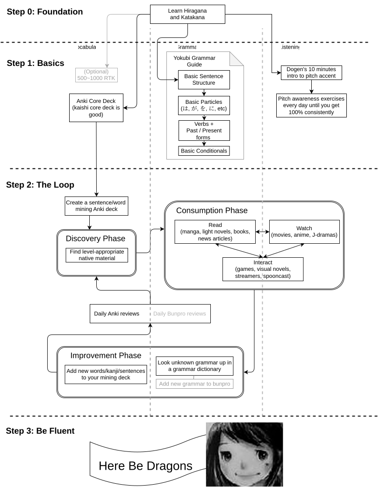

Welcome to the Japanese Beginner Guide!

Why do people fail to learn Japanese?
While many people dream of master Japanese and reaching the point where they can understand untranslated Japanese content with ease or speak it fluently, very few actually reach that level. With such a clear goal, why does this happen? Well, they either don't have the discipline to learn, or don't have the right resources (or both!). This guide aims to solve the latter. Traditional methods of learning Japanese do not set up students for success, do them lacking a vital part of language learning. Immersion, which refers to reading or listening content fully in Japanese. It's a crucial part of learning, being the foundation of this guide.
How to actually learn
This guide will provide an easy, accessible, and free learning system to get profecient in Japanese effeciently. The roadmap provided on the left provides a simplified overview of the learning process; is by no means extensive.
This guide is broken down into chunks, as seen in the navigation bar at the top. The basic steps this guide will show you how to execute is as follows; the times listed next to each section is the rough time required.
- Learn the methodology: (Less than an hour!)
Learn how to learn Japanese - Learn the phonetics: (1 week - 1 month)
Learn to read Kana and recognize pitch accent - Learn the basics: (2 months - 1 year)
Learn the most common 1500 words, read through a
beginner grammar guide and begin immersing in easy content - Acquire the language: (2 years - 5 years)
Steadily challenge yourself with harder and harder immersion,
adding new vocabulary to Anki and looking up unknown grammar patterns - Learn to speak: (6 months - 2 years, not covered in this guide**)
Convert your passive vocabulary into an active vocabulary through regular speaking